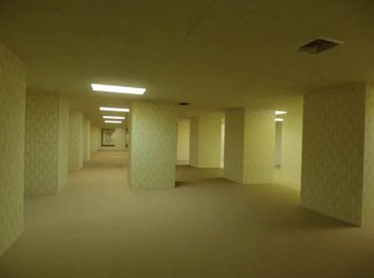

Bem-vindo às Backrooms(você não deveria estar aqui.)
Você já imaginou entrar em um lugar que parece não ter fim? As Backrooms são um universo misterioso formado por espaços estranhos, corredores vazios e lugares que parecem familiares, mas escondem algo inexplicável.
Explore diferentes níveis, conheça lugares fora da realidade e descubra os mistérios que existem por trás desse universo.
Explore os níveis
Cada nível possui suas próprias características, ambientes e mistérios. Prepare-se para explorar!

Nível 0 - The Lobby
Um labirinto de salas amarelas, iluminadas por lâmpadas fluorescentes, onde parece não existir uma saída.
Conheça os níveis